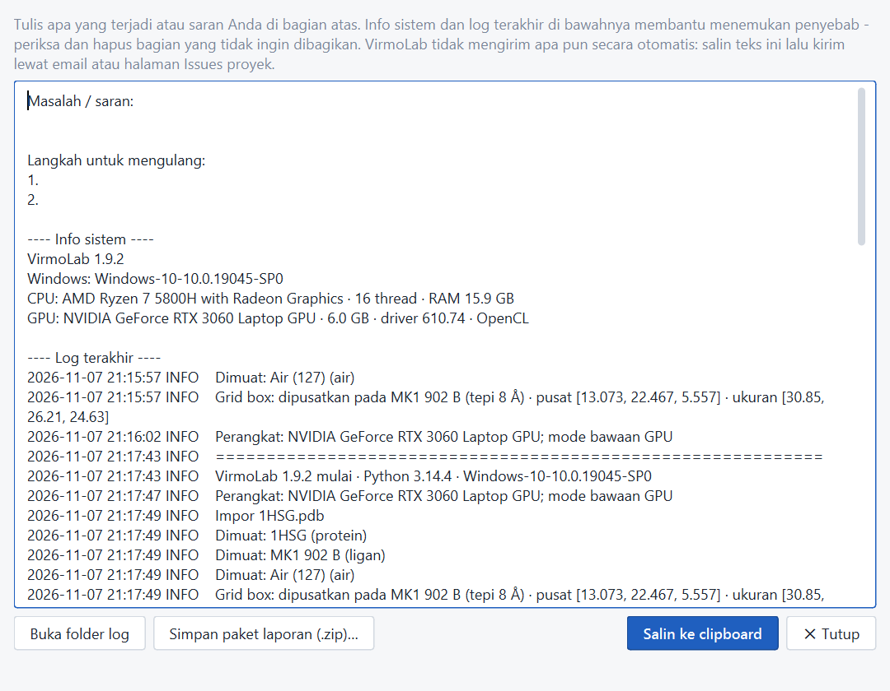

Mengatasi masalah
Masalah umum dan cara mengatasinya. Galat juga selalu dijelaskan di panel Pesan beserta langkah yang disarankan.
Langkah pertama: jalankan Alat › Uji mandiri komponen…. VirmoLab memeriksa semua mesin docking, Open Babel, RDKit/Meeko, docking Vina kecil, deteksi GPU, sifat ligan, statistik, PoseBusters, dan ekspor Excel (14 uji), lalu menampilkan mana yang gagal. Dari baris perintah:
VirmoLab.exe --uji-mandiri hasil.json.| Gejala | Penyebab & solusi |
|---|---|
| Status bar: “OpenCL tidak tersedia — mode CPU” | Driver GPU lama atau driver bawaan Windows. Perbarui driver (Setup GPU), restart, buka VirmoLab lagi. |
| Panel Pesan: “AutoDock-GPU tidak bisa memakai GPU (galat OpenCL)” | Job sudah dilanjutkan otomatis dengan Vina. Perbarui driver; bila tetap gagal, pakai Vina. |
| Viewport 3D hitam/kosong | Driver grafis tidak mendukung WebGL. Perbarui driver grafis. Sementara itu, jalankan VirmoLab dengan rendering perangkat lunak: buat shortcut dengan target VirmoLab.exe --disable-gpu. |
| Impor RCSB/PubChem gagal | Periksa koneksi internet; jaringan kampus/kantor dengan proxy bisa memblokir. Unduh berkas PDB/SDF lewat browser lalu buka dengan Berkas › Buka berkas struktur… (Ctrl+O). |
| “ID … tidak ditemukan di RCSB PDB” | ID salah ketik, atau struktur hanya tersedia sebagai mmCIF (VirmoLab mencoba mmCIF otomatis). |
| Preparasi reseptor: banyak residu dibuang | Residu dengan atom hilang (umum di loop fleksibel). Bila residu itu di dekat situs aktif, pilih struktur PDB lain dengan resolusi lebih baik, atau perbaiki struktur di software lain terlebih dahulu. |
| Preparasi reseptor gagal di Meeko | VirmoLab otomatis memakai Open Babel. Bila tetap gagal, coba pilih rantai tertentu saja dan hapus ligan/aditif. |
| Ligan: “> 32 torsi (batas AutoDock-GPU)” | Jalankan ligan tersebut dengan mesin Vina. |
| Ligan: “tipe atom tidak didukung AutoDock” | Mengandung unsur seperti B atau Si yang tidak punya parameter AutoDock4. Ganti ligan atau gunakan Vina dengan hati-hati. |
| Peringatan grid “melebihi 126 titik” | Kotak terlalu besar untuk spasi 0,375 Å. Naikkan spasi (mis. 0,5–0,6 Å) atau perkecil kotak. Tombol “Seluruh protein (blind)” mengatur spasi otomatis. |
| Validasi redocking RMSD > 2 Å | Coba: kotak dipusatkan ke ligan asli, run lebih banyak (preset Teliti), atau mesin lain. Bila ligan asli punya ion logam/air penting di situs aktif, pertahankan saat preparasi reseptor. |
| Docking berhenti saat laptop tidur (sleep) | Atur Windows agar tidak tidur saat dicolokkan. Job yang terputus berstatus Dijeda dan bisa dilanjutkan. |
Antivirus menghapus/memblokir autodock_gpu.exe atau vina.exe | Program ilmiah tanpa tanda tangan kadang dicurigai. Tambahkan folder VirmoLab ke pengecualian antivirus, lalu pasang ulang. |
| Tampilan terlalu kecil/besar | VirmoLab mengikuti skala Windows (Settings › Display › Scale). Panel bisa disembunyikan lewat Tampilan › Panel; ruang kerja (Ctrl+1/2/3) menampilkan hanya panel yang perlu; Tampilan › Atur ulang tata letak mengembalikan susunan bawaan. |
| Jendela tidak terlihat setelah lepas monitor kedua | Otomatis dipusatkan ke layar utama saat dibuka. Bila masih tersembunyi: Alt+Space › Move. |
Melapor masalah
Bantuan › Lapor masalah atau kirim saran… menyusun teks berisi uraian Anda, info sistem, dan log terakhir. Periksa isinya, klik Salin, lalu kirim lewat email atau halaman Issues proyek. VirmoLab tidak mengirim apa pun secara otomatis. Folder log: Bantuan › Buka folder log.
